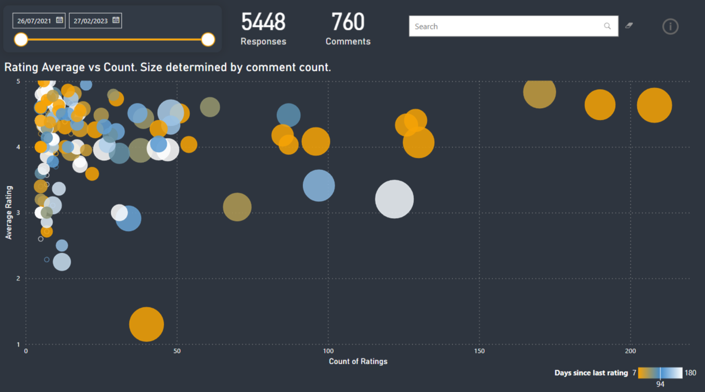
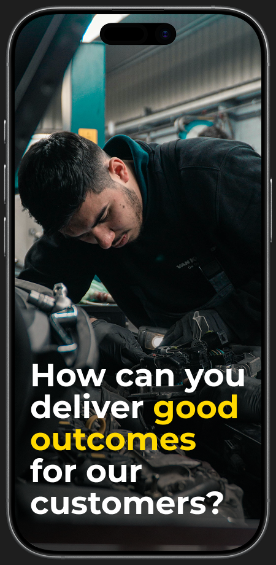
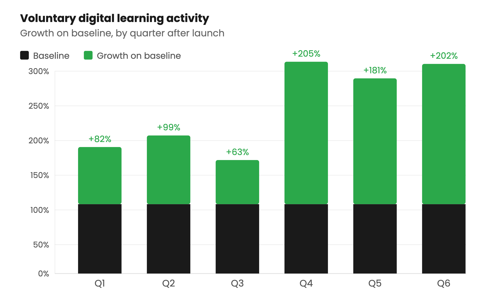

Transforming regulatory learning at a major UK insurer
How I used data and design to build trust, change perceptions, and transform regulatory learning at a top UK insurer.
Date: 2023-25
Skills and technologies: Articulate Storyline · Rise · 7Taps · Adobe Creative Cloud · Power BI
Outdated compliance training was hurting the Learning & Development team's reputation. Colleagues saw it as a box-ticking exercise, and the feedback data backed that up - average ratings sat at 3.8/5 across a programme with an audience of 10,000 people. For many in our business, this was their only exposure to my team's work. And it was weak.
First, I made the problem visible. I built an interactive dashboard to surface learner feedback and used it to build the case for change - initially with my leadership team, then with each of the 12 compliance topic owners. The pitch was simple: I have the skills and vision to rebuild this programme into something we can be proud of. All I need is your trust and expertise.
The most important design choice was refocusing the entire programme on decision-making. Compliance learning became about recognising triggers and choosing the right response, not dumping information into people's heads and hoping it sticks.

I ditched outdated e-Learning clichés in favour of media-rich scenario-based experiences. Built with Articulate Rise, Storyline, and 7taps, I used storytelling and branching to ensure practical decision-making sat at the heart of each course. I used Adobe Illustrator and After Effects to create on-brand instructional media. This replaced flat stock imagery and juvenile clip-art with tailored graphics to support storytelling and reinforce learning through dual coding.
The impact showed up in the numbers. I increased average learner ratings from 3.8 to 4.7/5, sustained over three years, across more than 380,000 individual reviews. By bringing all design and development in-house, I removed the dependency on external suppliers, saving £45,000 a year - £135,000 across the life of the programme.
The programme's reputation shifted too. Stakeholders who had never considered digital learning as a serious channel began approaching the team. New topics were added to the curriculum - Data Ethics and Artificial Intelligence, Diversity, Equity and Inclusion, Anti-Bullying and Harassment, Economic Crime & Corporate Transparency. Each an endorsement of a model that was finally trusted.
But the most significant door it opened was into a population that had never engaged with digital learning at all...
I saw an opportunity to introduce digital learning to my organisation's auto repair business for the first time. The odds were against us. Previous attempts had failed. The workforce was hands-on, efficiency-focused, and deeply sceptical of anything that looked like corporate training on a screen.

I started small. Rather than rolling out at scale, I designed a pilot at a single site. We worked closely with technicians to understand their actual workflow - where they could access a device, what would feel manageable between jobs. The learning was built around those constraints: short, practical, and designed for the moments that genuinely suited their day.
The pilot changed the conversation. Mechanics told us the experience was far more accessible than they'd expected. Completion rates were in the high nineties - well beyond what anyone anticipated for this population. That gave us the mandate to expand across all 23 sites.
The real question was whether the change would stick. Before launch, I baselined digital learning activity outside of the compliance programme. This gave me a clean measure of voluntary engagement - learning that people chose to do, not learning they were told to complete.

Over the following six quarters, voluntary digital learning activity grew by over 200% on baseline. The acceleration in later quarters wasn't driven by my programme. By that point, the business area had become self-sufficient. They were creating and embedding their own digital learning content without central involvement.
That final shift confirmed that we hadn't just delivered a programme. We'd changed how that business related to learning as part of their work.